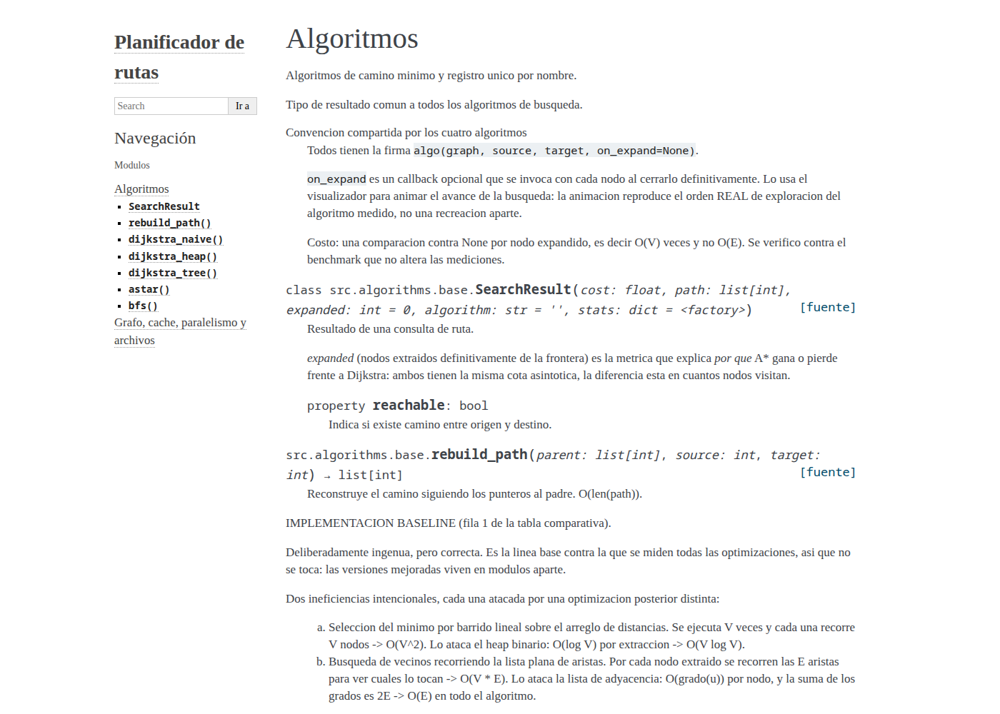
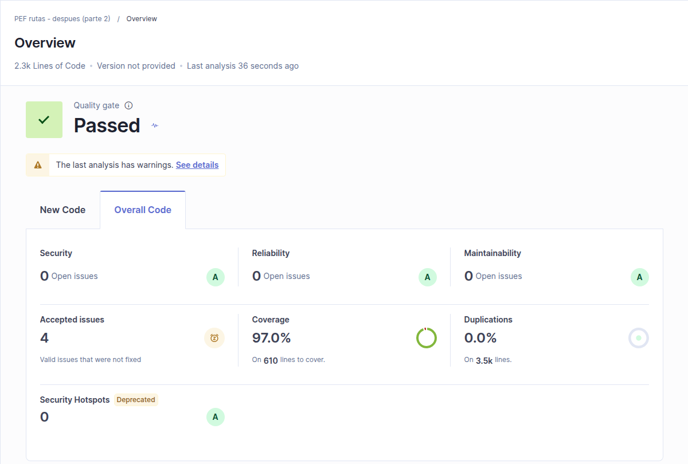
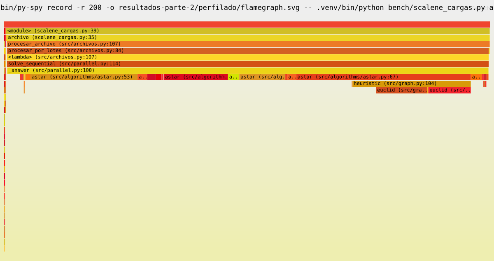
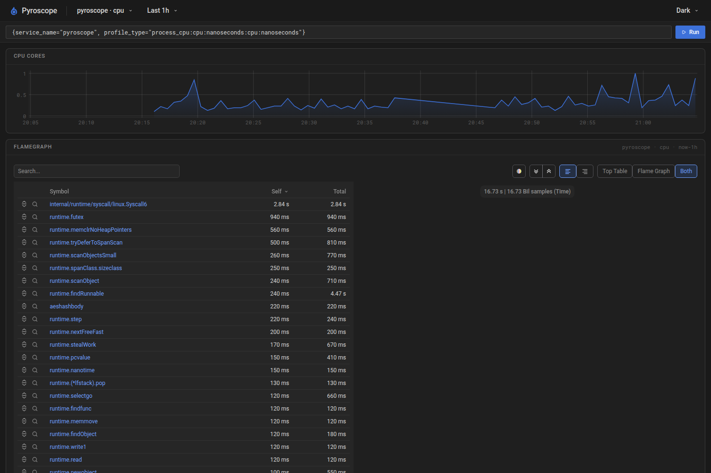

Planificador de rutas
Parte 2: código que se puede mantener
En la parte 1 lo hicimos rápido. En la parte 2 lo hicimos limpio, probado, documentado y medido, y lo usamos para procesar archivos de un millón de consultas sin que la memoria explote.
Diez temas, una herramienta simple para cada uno
El criterio fue elegir lo más directo: si algo se resolvía con un comando en vez de con código nuevo, se usó el comando.
6 duplicaciones eliminadas
siempre con tests en verde
ruff + docstrings
de 13 a 76 tests
FastAPI · pytest
SonarQube
Sphinx
Scalene · py-spy · SnakeViz
Grafana Pyroscope
lotes · buffer · procesos
Primero la red de seguridad, después tocar el código
Refactorizar sin tests es apostar. El orden fue pensado para que cada cambio se pueda verificar en el momento.
Sonar, ruff, cobertura, benchmark de la parte 1
la red de seguridad
sacar duplicados, ordenar
formato automático y docstrings
funcionalidad nueva
mismas herramientas, comparar
Regla: después de cada paso, pytest en verde. Si no, no se avanza.
Y al final, el benchmark de la parte 1 de nuevo: el refactor no puede hacerlo más lento.
Lo mismo, escrito una sola vez
- El “menú” de algoritmos, copiado en 3 archivos (CLI, paralelismo, visualizador) y con nombres distintos en cada uno.
- El bucle de Dijkstra, escrito dos veces: una para una consulta y otra para el árbol completo que usa la caché.
- El mismo párrafo de documentación, pegado en los 4 algoritmos.
- Cronometrar, repetido a mano en la CLI y el servidor.
- “Resolver una consulta”, igual en los modos secuencial, hilos y procesos.
- Una función que nadie usaba y 5 trucos de
sys.path.
# antes: 30 líneas que copiaban el bucle # después: def dijkstra_tree(graph, source): dist, parent, _, _ = _search(graph, source, target=None) return dist, parent
# un único registro, lo usan todos ALGORITHMS = { "naive": dijkstra_naive, "heap": dijkstra_heap, "astar": astar, "bfs": bfs, }
Riesgo controlado: los 76 tests y el benchmark confirman que el resultado y el tiempo no cambiaron.
De un script casero a un framework de testing
Los grafos de prueba se arman en un solo lugar (conftest.py) y cada test los pide por nombre. Para archivos, tmp_path da una carpeta temporal que se borra sola.
Un test se escribe una vez y corre por cada familia de grafo × cada algoritmo. Si falla uno, el reporte dice exactamente cuál.
Todo se compara contra Bellman-Ford, lento pero fácil de auditar: una optimización que cambia el resultado es un bug.
@pytest.mark.parametrize("name", ["naive", "heap", "astar"]) def test_costs_match_reference(graph, name): for s, t in pairs(graph): got = ALGORITHMS[name](graph, s, t).cost assert got == pytest.approx( bellman_ford(graph, s)[t])
1 función → 12 tests (4 familias × 3 algoritmos)
El visualizador pasa de un servidor a mano a FastAPI
En la parte 1, viz/server.py usaba http.server: un if por ruta, parámetros parseados y validados a mano, cabeceras HTTP escritas una por una.
desde: int, algo: Algoritmo: un parámetro inválido devuelve 422 sin escribir validación.
/docs genera una página interactiva (Swagger) para probar cada endpoint.
TestClient: 11 tests nuevos de la API sobre el mapa real de Córdoba.
Los cálculos no cambian: los endpoints llaman al mismo src/. Son CPU-bound, por eso se dejan como def (pool de hilos) y no async.
# antes: http.server def do_GET(self): url = urlparse(self.path) q = {k: v[0] for k, v in parse_qs(url.query).items()} if url.path == "/api/ruta": return self.api_ruta(q) # int(q["desde"])... ... # después: FastAPI @app.get("/api/ruta") def api_ruta(desde: int = Query(ge=0), hasta: int = Query(ge=0), algo: Algoritmo = Algoritmo.astar, cache: bool = False) -> dict: ...
El estilo lo revisa una herramienta, no una persona
ruff hace dos cosas: formatea el código (sangrías, espacios, largo de línea) y lo revisa según PEP 8, orden de imports, nombres y docstrings.
- Docstrings estilo Google en toda función pública: después Sphinx los convierte en documentación.
- Nombres: se dejó la mezcla español/inglés que ya existía (renombrar todo es riesgo sin ganancia) y se fijó una regla para el código nuevo.
- Config en
pyproject.toml: todos usan las mismas reglas.
Ninguno era un error de ejecución: eran deudas de legibilidad. Por eso conviene automatizarlo antes de que se acumulen.
La documentación sale del mismo código
En la parte 1 escribimos docstrings largos que explican por qué se eligió cada estructura. Sphinx los lee y arma un sitio web navegable.
autodoc lee los docstrings · napoleon entiende el formato Google · viewcode enlaza al código fuente.
Si cambia el código, se regenera con un comando:sphinx-build -b html docs docs/_build/html

Una segunda opinión automática, antes y después
SonarQube corrió en Docker sobre el código de la parte 1 y el de la parte 2, con las mismas reglas.
Deuda técnica: 220 min → 0. Cobertura según Sonar: 64,6% → 97% (lee el reporte de pytest-cov).

El despachante ahora recibe un archivo con un millón de pedidos
IngenuoTodo de una vez
- Lee el archivo entero a memoria.
- Resuelve todas las consultas y las guarda.
- Escribe fila por fila, avisándole al sistema operativo en cada una.
La memoria crece con el archivo. Con 10 millones de filas, no entra.
OptimizadoUna cinta transportadora
- Batching: un generador entrega de a 10.000 filas.
- Buffer: se escribe en bloques de 1 MB, un lote por llamada.
- Paralelo: cada lote se reparte entre 12 procesos, con un pool creado una sola vez.
La memoria queda fija, sea cual sea el tamaño del archivo.
def leer_lotes(ruta, tam_lote): with open(ruta, newline="", buffering=1 << 20) as f: # buffer de 1 MB lector = csv.reader(f); next(lector) while lote := list(islice(lector, tam_lote)): # de a N filas yield [(int(s), int(t)) for s, t in lote]
La memoria deja de depender del tamaño del archivo
La versión ingenua crece en línea recta. La de lotes queda plana: solo tiene en memoria un lote a la vez.
Con cálculo real, el cuello de botella es la CPU, no el disco
Leer en lotes y con buffer apenas cambia el tiempo: el 98% se va en calcular rutas. El paralelismo sí ataca eso.
Muy chico: se pierde el tiempo coordinando procesos. Muy grande: no mejora y usa más memoria. El punto justo está entre 1.000 y 10.000.
El perfilador que mira línea por línea
En la parte 1, cProfile mostraba el baseline como una caja negra: solo dice qué función tarda, y los dos bucles lentos estaban dentro de la misma. Tuvimos que poner cronómetros a mano.
Scalene mide cada línea, separa el tiempo de Python del tiempo de código nativo y además mide memoria. Sin tocar el código.
Sin un solo cronómetro, Scalene reparte el baseline igual que nuestra medición a mano: 66,6% / 32,4% (parte 1: 65,9% / 34,1%). Con el archivo de consultas: 96% calcular rutas, menos del 1% leer y escribir el CSV, y una sorpresa: la heurística de A* sola se lleva el 37%.
% del tiempo de CPU · uvx --python 3.12 --from scalene==1.5.51 scalene --cli --cpu …
Un flamegraph: dónde se va el tiempo, de un vistazo
py-spy “espía” un programa que ya está corriendo, desde afuera: no hay que modificarlo ni reiniciarlo.
Cada barra es una función; el ancho es el tiempo que consume. Las de abajo llaman a las de arriba.
Procesando un archivo: casi todo el ancho es astar y heappush. Leer y escribir el CSV casi no aparece.

Monitoreo continuo: perfilar en producción, no solo en el laboratorio
Es la misma idea que New Relic o Elastic APM, pero open source, corre local en Docker y no pide cuenta.
Un script conecta el agente y etiqueta cada operación: comparar, lote-cache, archivo…
Ver en una web qué operación consume más CPU a lo largo del tiempo, y compararlas filtrando por etiqueta.

Más limpio, y igual de rápido
Se volvió a correr el benchmark completo de la parte 1 sobre el código refactorizado. Mismos grafos, misma semilla.
Mediana de 4 corridas. El baseline (fuera de escala) pasó de 9.539 ms a 9.264 ms. Todas las diferencias (−3% a +5%) están dentro del ruido normal entre corridas.
Qué nos llevamos
Con 76 tests y 97% de cobertura, refactorizar dejó de dar miedo. Sin ellos, cada cambio habría sido una apuesta.
Esperábamos que el disco fuera el problema con archivos grandes. Midiendo vimos que era la memoria, y que el tiempo se iba en la CPU.
Lotes chicos desperdician tiempo coordinando procesos, y los grandes gastan memoria. El tamaño correcto se mide, no se adivina.
ruff, SonarQube y Sphinx corren solos. La calidad no depende de que alguien se acuerde.
cProfile: ¿qué función? Scalene: ¿qué línea? py-spy: ¿qué pasa ahora? Pyroscope: ¿qué pasa siempre?
Empezar la parte 1 ya con pytest y ruff: la deuda de estilo y de tests se acumula rápido.
Cómo correrlo en vivo
# tests + cobertura pytest --cov --cov-report=term-missing # archivo grande: generar 1M de consultas y resolverlas por lotes en paralelo python -m src.cli generar-consultas --size 2000 --n 1000000 --salida consultas.csv python -m src.cli archivo --size 2000 --entrada consultas.csv --salida respuestas.csv --lote 10000 # calidad y documentación ruff check . && ruff format --check . sphinx-build -b html docs docs/_build/html # perfilado uvx --python 3.12 --from scalene==1.5.51 scalene --cli --cpu --profile-all \ --profile-exclude threading bench/cargas_perfilado.py --- baseline py-spy record -o flame.svg -- python -m src.cli archivo --entrada consultas.csv --secuencial
Todos los resultados están en la carpeta resultados-parte-2/.